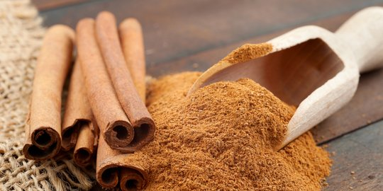

Kayu manis (Cinnamomum verum, sin. C. zeylanicum) ialah sejenis pohon penghasil rempah-rempah. Termasuk ke dalam jenis rempah-rempah yang amat beraroma, manis, dan pedas. Orang biasa menggunakan rempah-rempah dalam makanan yang dibakar manis, anggur panas.
Kayu manis adalah salah satu bumbu makanan tertua yang digunakan manusia. Bumbu ini digunakan di Mesir Kuno sekitar 5000 tahun yang lalu, dan disebutkan beberapa kali di dalam kitab-kitab Perjanjian Lama.
Kayu manis juga secara tradisional dijadikan sebagai suplemen untuk berbagai penyakit, dengan dicampur madu, misalnya untuk pengobatan penyakit radang sendi, kulit, jantung, dan perut kembung.
Beberapa spesies kayu manis yang dijual di pasaran di antaranya:
Kulit manis Ceylon sering kali hanya menggunakan kulit bagian dalam yang lebih tipis, lebih memiliki kesegaran, kurang padat, lebih beraroma, dan lebih lembut dalam rasa daripada kasiavera. Kasiavera memiliki rasa yang lebih kuat (sering lebih pedas) daripada kulit manis Sri Lanka dan umumnya berwarna merah kecoklatan sedang hingga ringan, keras dan bertekstur kayu, serta lebih tebal (2–3 mm (0,079–0,12 inci) dan menggunakan seluruh lapisan kulitnya.